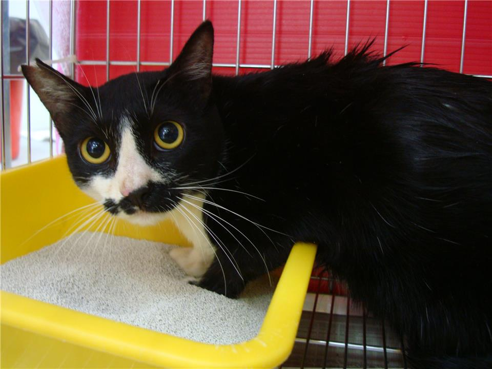
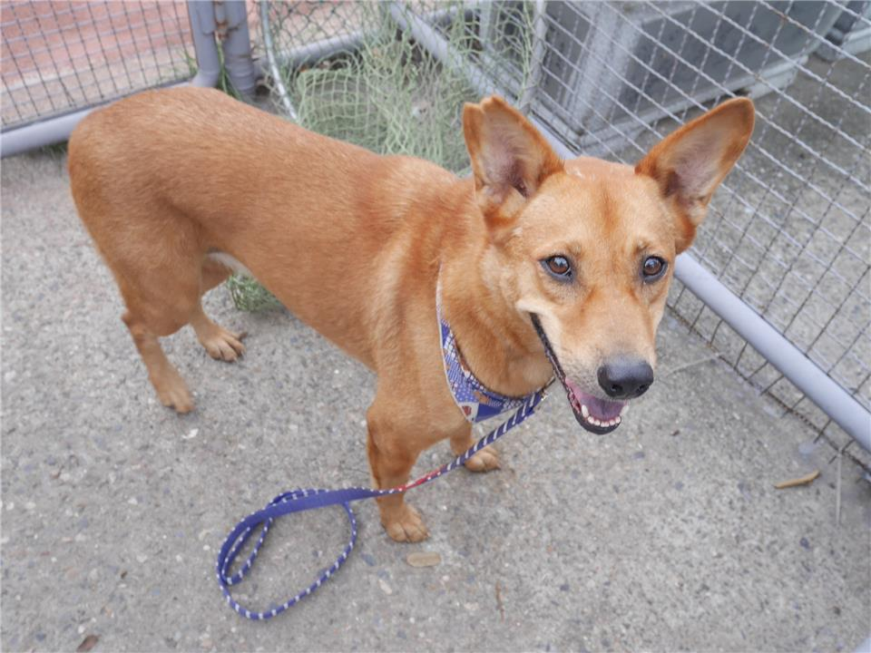
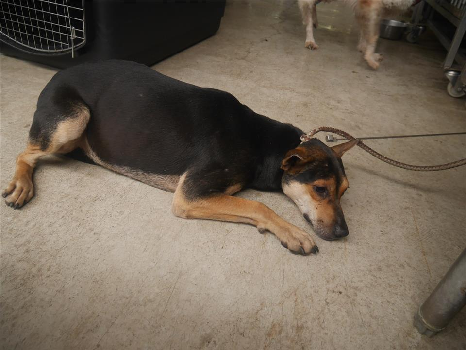
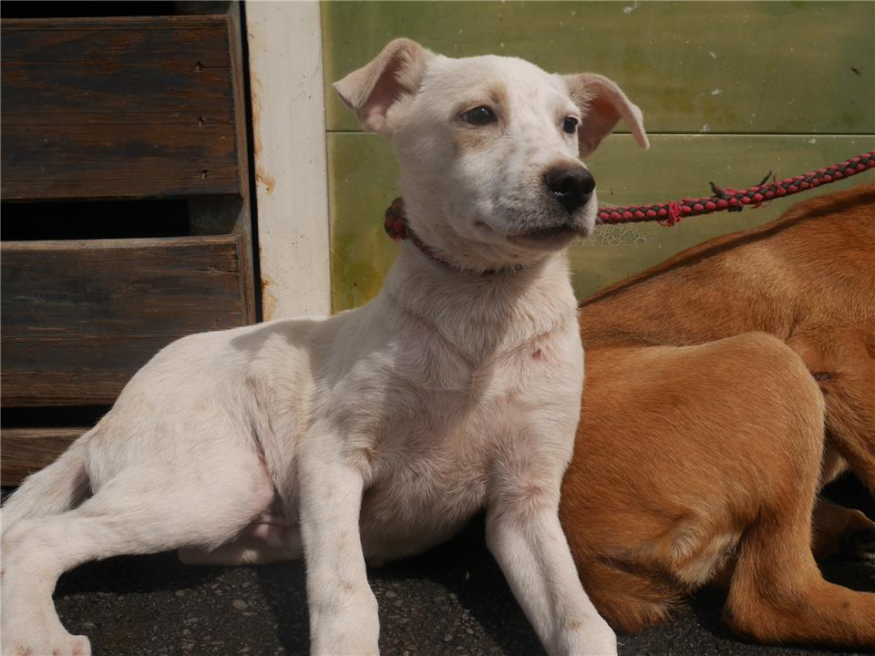

認養動物 狗 / 貓  中和區 / 成年 / 母 動物名稱:喵喵 板橋區 / 成年 / 母 動物名稱:小班 中和區 / 成年 / 母 動物名稱:小花  板橋區 / 成年 / 母 動物名稱:小黃  板橋區 / 成年 / 母 動物名稱:牛牛  板橋區 / 成年 / 公 動物名稱:小白
上百隻貓狗都在收容所等待,而我等了三年。 上百隻貓狗都在收容所等待,而我等了三年。 上百隻貓狗都在收容所等待,而我等了三年。 上百隻貓狗都在收容所等待,而我等了三年。 上百隻貓狗都在收容所等待,而我等了三年。 上百隻貓狗都在收容所等待,而我等了三年。 上百隻貓狗都在收容所等待,而我等了三年。 上百隻貓狗都在收容所等待,而我等了三年。
最新消息 新聞標題 新聞內容新聞內容新聞內容新聞內容新聞內容新聞內容新聞內容新聞內容新聞內容新聞內容新聞內容新聞內容新聞內容新聞內容新聞內容新聞內容，新聞內容新聞內容新聞內容新聞內容 新聞標題 新聞內容新聞內容新聞內容新聞內容新聞內容新聞內容新聞內容，新聞內容新聞內容新聞內容新聞內容 新聞標題 新聞內容新聞內容新聞內容新聞內容新聞內容新聞內容新聞內容，新聞內容新聞內容新聞內容新聞內容 新聞標題 新聞內容新聞內容新聞內容新聞內容新聞內容新聞內容新聞內容，新聞內容新聞內容新聞內容新聞內容 新聞標題 新聞內容新聞內容新聞內容新聞內容新聞內容新聞內容新聞內容，新聞內容新聞內容新聞內容新聞內容 新聞標題 新聞內容新聞內容新聞內容新聞內容新聞內容新聞內容新聞內容，新聞內容新聞內容新聞內容新聞內容